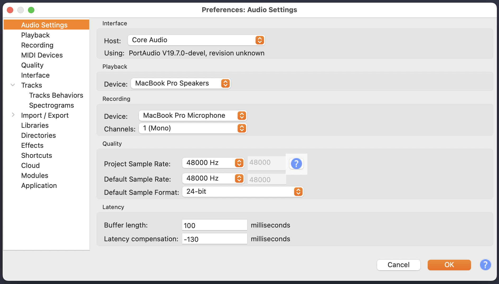

MUS 381 · Essentials of Music TechnologyModule 02 · Lab 1
Module 02 · digital audio, editing & mixing
Audacity orientation
Open Audacity, import a sound, make your first edit, then save and export it.
Audacity is the DAW we'll use for the rest of Module 2.
Today's gear
Take from the lab's gear storage: audio interface, headphones. Plug in and run through the start-of-session steps on the Session Routines card before continuing here.
what we're doing today
Download the orientation sample from the class server into your local working folder.
Open Audacity and set the project format (48 kHz, 24-bit).
Tour the Audacity interface: the parts you'll use today and the names of things.
Import the sample, play it back, listen.
Make one selection, one cut, one fade. Listen to the difference.
Save the project, then export to WAV at the course-standard format.
Upload everything back to the server using the end-of-session routine.
Before you start
Keep the Session Routines card visible as we go. The routine will feel slow at first; by Wk 4 you'll run it without looking. At the end of class you'll run the end-of-session half of the card.
Step 1 · download the orientation sample
Today's sample is on the class server in /public/module-02/orientation/. It's a short bell-like resonance recorded in stereo, about sixteen seconds long, with a dense ringing sustain that slowly fades to silence. You'll use it to learn Audacity's basic moves.
Grab it while you're still connected during your start-of-session routine. If you've already disconnected, open FileZilla and connect again from the Quickconnect bar.
In Finder, make an orientation folder inside ~/Documents/netid/ if you don't have one yet.
On FileZilla's right side, click the / at the top of the directory tree, then open public, then module-02, then orientation. You'll see one file: orientation-sample.wav.
On the left side, navigate to ~/Documents/netid/orientation/.
Drag orientation-sample.wav from the right side into the left side. Wait for the transfer queue at the bottom to clear.
Choose Server → Disconnect and quit FileZilla. You won't need it again until the end of the session.
Local-first, server as sync
You work from your local folder. Download from the server at the start of the session, work locally, and upload at the end, as on the Session Routines card.
Step 2 · open Audacity, set the project format
In the Dock, find the Audacity icon (a pair of orange headphones around a sound wave). Click it once.
Audacity opens with an empty project window. Don't import anything yet.
From the menu bar, open Audacity → Settings… (or Cmd + ,).
Click Audio Settings (or, in older versions of Audacity, Quality).
Set Project Sample Rate to 48000 Hz.
Set Default Sample Format to 24-bit PCM.
Close the Settings window. The project is now set to 48 kHz, 24-bit, the Module 2 format.

Audio Settings · 48 kHz, 24-bit PCM
48 kHz, 24-bit
Your phone recordings in Module 3 and your Ableton work in Module 4 are at 48 kHz too. In Module 4 you'll export at 32-bit; the rate stays at 48 kHz. Monday's reading covers the history of 44.1 kHz and 48 kHz.
Step 3 · a tour of the interface
Before you import anything, take a minute to learn the names of the things on screen. You don't need to memorize them all. Be able to find them when an instruction says "click the play button" or "use the selection tool."
Audacity main window · empty project
1. Menu bar (File, Edit, Select, View, Transport, Tracks, Generate, Effect, Analyze, Tools, Help) 2. Transport toolbar (pause, play, stop, skip-to-start, skip-to-end, record, loop) 3. Tools toolbar (selection / envelope / draw / multi-tool) 4. Recording & playback level meters 5. Audio Setup dropdown (host, playback device, recording device, channels, project rate) 6. Timeline ruler (seconds across the top of the track area) 7. Track area (where audio appears once you import it) 8. Selection toolbar (start / end times of the current selection)
You click and drag a region of audio with the Selection tool (the I-beam icon in the Tools toolbar). Every edit today starts with it. Make sure it's selected.
The play button in the Transport toolbar plays the project. The spacebar does the same thing. Use the spacebar.
Step 4 · import the sample, play it, listen
From the menu bar, click File → Import → Audio… (or Cmd + Shift + I).
Navigate to your local folder at ~/Documents/netid/orientation/ and select orientation-sample.wav. Click Open.
The waveform appears as a stereo track with two lanes (left channel on top, right channel below). The dense ringing sustain fills roughly the first half; the second half tapers as the resonance fades toward silence.
Press spacebar to play. Listen. Press spacebar again to stop.
The orientation sample imported · stereo track with a ringing sustain that fades to silence
Look at the waveform shape: a long sustain with internal swells, then a long release as the resonance fades out. Mon Wk 3's reading names these stages of a sound's envelope. Make a habit of looking at the waveform as you work; it shows you what you're going to hear before you hear it. The two lanes (left and right channels) are similar but not identical: that's what makes this sample stereo rather than mono.
Step 5 · your first edit: select, cut, fade
This edit shortens the sample's release, in three small moves (selection, cut, fade-out). Listen after each one.
make a selection
Make sure the Selection tool (the I-beam) is active in the Tools toolbar.
Click and drag in the waveform from around 7 seconds in to the very end of the file. Drag across the full track height to cover both stereo lanes. The selected region appears highlighted across both channels.
Press spacebar. Audacity plays only the selection: the end of the sustain and the release.
A selection from about 7 seconds to the end · the highlighted band spans both stereo lanes
cut it
With the selection still highlighted, press Cmd + X (or Edit → Cut).
The selected region disappears from the track. The sample now ends where you cut.
Press Home (fn + ← on a Mac keyboard without a Home key) to jump to the start, then spacebar to play. Listen. The sample now stops abruptly: an unnaturally hard release.
soften the new ending with a fade
An abrupt cut at the end of an audio clip often produces a click: the waveform stops partway through a cycle instead of at zero. A short fade-out removes the click and gives the ending a gentler release.
Click somewhere in the last couple of seconds of audio, then drag a selection covering the final ~2 seconds across both stereo lanes. (Watch the selection toolbar at the bottom: it shows start and end times to the millisecond.)
From the menu bar, click Effect → Fading → Fade Out.
The waveform in the selected region now ramps down to silence visually on both channels. Play the file again. The cut-off ending now fades cleanly instead of stopping hard.
After the cut, with a fade-out selection over the last seconds · the ending tapers to zero on both channels
What you just did
Three moves: selection, cut, fade. Mon Wk 3's reading expands these to about a dozen editing moves, each a way of selecting a region and changing it.
Step 6 · save the project, then export to WAV
Audacity has two distinct save operations, and you need both.
Save Project writes Audacity's working file (an .aup3 file). It keeps all your tracks, edits, undo history, and project settings, and you can reopen it next session and keep working. Other software can't read it.
Export writes a finished audio file (a .wav) that any music software, media player, or upload form can open. This is what you submit, share, or play outside of Audacity.
save the project
Choose File → Save Project → Save Project As…
Navigate to ~/Documents/netid/orientation/.
Name the file lastname-orientation.aup3. (Replace lastname with your own last name, in lowercase.) Click Save.
export to WAV
File → Export Audio… (or Cmd + Shift + E).
The first time you export, Audacity shows a "How would you like to export?" prompt with two options: Share to audio.com (a cloud service) and On your computer (a local file). Click Export to computer, for a local file. Tick Don't show again in the bottom-left, and the prompt won't appear on later exports.
The export-destination prompt · choose Export to computer, tick Don't show again
The Export Audio dialog opens. Fill it in:
In File Name, type lastname-orientation.wav (lowercase, with your last name).
For Folder, click Browse… and pick ~/Documents/netid/orientation/.
Set Format to WAV (Microsoft).
Set Channels to Stereo, matching the source.
Set Sample Rate to 48000 Hz.
Set Encoding to Signed 24-bit PCM.
Set Export Range to Entire Project.
Click Export. If a metadata dialog appears, you can leave it blank and click OK.
Name files by the rules in Day 1, Part 3. garcia-orientation.wav follows them; Garcia Orientation Final.wav can break on the server and in command-line tools.
Step 7 · end of session
Open the Session Routines card and follow its end-of-session routine. The steps below say what to upload during the card's upload phase.
what to upload today
During the upload phase of the routine, put FileZilla's left side on ~/Documents/netid/ and leave the right side in your own folder on the server.
Click into the left side, select everything (Cmd + A), and drag it across. Your orientation/ subfolder (with both lastname-orientation.aup3 and lastname-orientation.wav) goes up with it. If FileZilla asks about files that already exist, choose Overwrite if source newer, tick Always use this action and Apply to current queue only, and click OK.
Verify both files uploaded: on the right side, open orientation/.
Then finish the end-of-session routine on the card.